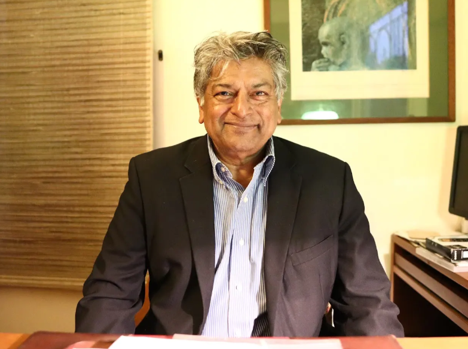
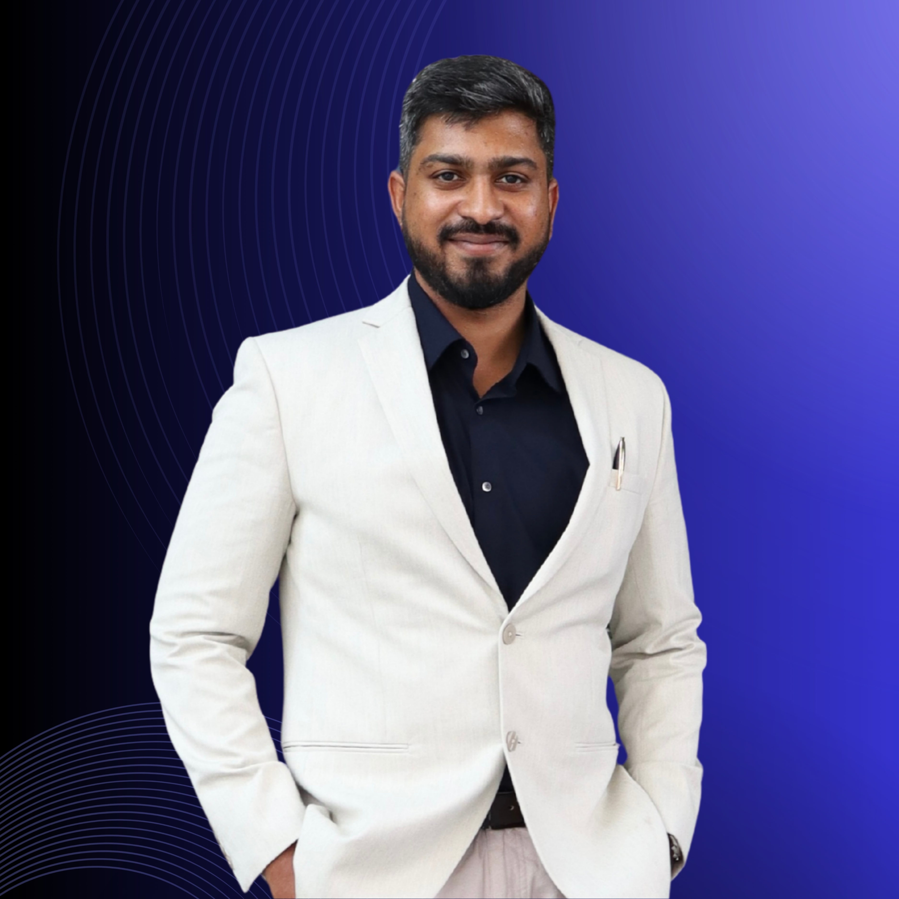

Hoodi Strategy Group was founded on a vision of bringing together deep expertise in diplomacy, technology, and strategic policy to address India's most pressing challenges in an interconnected world. Led by Professor Vijay Chandru, a renowned technology and innovation strategist, the firm draws on decades of institutional and academic knowledge, and Ambassador Latha Reddy, a seasoned diplomat with extensive international affairs experience.
Our Team

Ambassador Latha Reddy
Founding PartnerAmbassador Latha Reddy brings four decades of distinguished expertise spanning diplomatic excellence and cybersecurity leadership to Hoodi Strategy Group. As India's former Deputy National Security Advisor (2011–2013) and a 36-year veteran of the Indian Foreign Service, she provides unmatched strategic insight into the complex intersection of technology, security, and international relations.
Her diplomatic career included ambassadorial postings to Portugal and Thailand, service as Secretary (East) overseeing India's entire Asian engagement, and pivotal roles during the post-apartheid South Africa. As Deputy NSA, she spearheaded India's cybersecurity policy framework, including the foundational National Cyber Security Policy of 2013. She has held positions as Co-Chair of the Global Commission on the Stability of Cyberspace and previously served as Commissioner on the Global Commission on Internet Governance, positioning her at the forefront of international cyber governance.
Ambassador Reddy's expertise directly supports HSG's focus areas of cybersecurity policy, digital governance frameworks, international cyber cooperation protocols, and diplomacy in Asia-Pacific relations. Her extensive network spans government, multilateral organizations, and global cybersecurity institutions, enabling HSG to deliver authoritative guidance on technology governance, cross-border data protection, and strategic risk assessment in the digital domain.
She is currently the Chairperson of the Asia Centre in Bangalore and the Deccan Heritage Foundation. Additionally, she has served as an Independent Director of Jana Small Finance Bank and holds active fellowships with the Observer Research Foundation and the Takshashila Institution. Her unique blend of diplomatic experience, expertise in cybersecurity, and extensive international networks makes her exceptionally well-suited to lead HSG's engagement with government institutions and international organizations.

Professor Vijay Chandru
Founding PartnerProfessor Vijay Chandru (PhD, MIT) represents the convergence of academic excellence, entrepreneurial success, and public policy impact that defines HSG's approach to technology-driven strategic advisory. As an elected Fellow of the American Association for the Advancement of Science (2023), Indian Academy of Sciences (1996), and Indian National Academy of Engineering (2010), he brings world-class expertise in computational sciences, biotechnology innovation, and digital health systems.
His entrepreneurial journey includes founding and leading Strand Life Sciences (2000–2018), India's leading precision medicine company, and co-founding CRISPRBITS for point-of-care diagnostics. As President of ABLE (Association of Biotechnology Led Enterprises) from 2009–2012, he shaped India's biotechnology policy landscape. Currently serving as Chair of the Advisory Committee for the National One Health Mission under the Principal Scientific Advisor to the Government of India, he continues to influence national technology policy at the highest levels.
Professor Chandru's expertise directly addresses HSG's focus areas of health technology and digital health policy, innovation ecosystems and technology transfer, and biotechnology trade policies. His current roles span prestigious institutions: Visiting Scientist at Harvard School of Public Health, Visiting Professor at multiple premier institutions including NCBS-TIFR, and Executive Advisor to the AI & Robotics Technology Park at IISc.
His co-chairmanship of the Technology Workstream for the Lancet Citizens Commission on Reimagining India's Health Systems, combined with his Technology Pioneer recognition from the World Economic Forum (2006), positions him to guide HSG's clients through the complex landscape of health technology policy, public-private partnerships, and innovation commercialization pathways. His academic-industry-government nexus experience is invaluable for HSG's mission to bridge policy and technology implementation.

Ashwin Dhanabalan
Research AssociateAshwin Immanuel Dhanabalan brings specialized expertise in international trade negotiations, regional diplomacy, and strategic analysis to Hoodi Strategy Group. As a Konrad Adenauer Stiftung Doctoral Scholar and Rising Leaders Fellow 2024, he represents the new generation of strategic thinkers equipped to navigate complex geopolitical and economic challenges in the Indo-Pacific era.
His professional experience spans multiple prestigious institutions and high-impact projects. As a Senior Research Affiliate and Coordinator of Projects at the Centre for East Asian Studies, Christ University, he has managed critical research initiatives including "Partners in Progress: How Does the U.S.-India Strategic Partnership Matter?" in collaboration with George Washington University and the U.S. Department of State, and "Devising a Regional Pedagogy on the Indo-Pacific" with the Council of Strategic and Defense Research. He is also a part of the Young South Asian Leaders Initiative network by the U.S. Department of State.
Having served as Project Associate at the National Institute of Advanced Studies (NIAS) and as Adjunct Faculty teaching International Relations and Sustainable Development Goals at Christ University, he combines theoretical rigor with practical policy experience. His participation in prestigious dialogues, including the Australia India Leadership Dialogue 2022 and various policy forums, demonstrates his integration into India's strategic community.